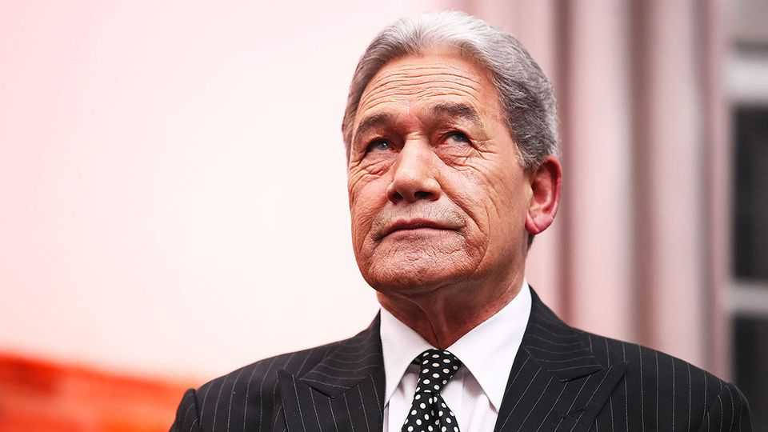

New Zealand’s foreign minister sparks ire with a detestable taunt
But Winston Peters is not going anywhere

Aug 6th 2026
“GO BACK to your own country,” Winston Peters, New Zealand’s foreign minister, shouted at Lawrence Xu-Nan in Parliament on July 29th. “That’s where they lie like a flatfish,” he went on at Mr Xu-Nan, who left China for New Zealand when he was a boy. The Green Party MP had angered Mr Peters by asking, in a debate about New Zealand’s response to covid, if Mr Peters had been vaccinated. Helen Clark, a former Labour prime minister in whose government Mr Peters also served as foreign minister in the 2000s, said that the remark would “send a chill right around our migrant communities”, and questioned whether he could still manage relations with China, to which New Zealand sells a fifth of its exports. The Chinese embassy lodged a diplomatic protest.
Mr Peters (pictured) first entered Parliament nearly five decades ago. Now 81 years old, he is the founder (and to date the only leader) of the populist New Zealand First party. Since the late 1990s he has drawn heavily on anti-Asian gibes, usually dressed up as anti-immigration rhetoric, to keep his small party in Parliament. And he has done well out of that, positioning himself as a kingmaker in both centre-right and centre-left coalition governments and serving as foreign minister three times, including in Jacinda Ardern’s first government from 2017 to 2020.
Christopher Luxon, the prime minister and leader of the centre-right National Party, has kept Mr Peters as foreign minister despite telling reporters that he regarded his words as racist. The prime minister said Mr Peters was speaking as the leader of New Zealand First rather than in his role as the country’s foreign minister. But Mr Luxon must be counting the days until October 1st, when parliament is due to be dissolved before a general election in November. At those polls he is hoping to tout a still-unratified free-trade agreement with India as the centrepiece of his government’s trade policy. Mr Peters has loudly opposed the deal, calling it lopsided and objecting in particular to a provision that would allow a few thousand skilled migrants to enter New Zealand. That has forced Mr Luxon to rely on Labour’s support to pass an enabling bill.
Mr Peters cuts an unusual figure at the Beehive, as New Zealand’s parliamentary complex is known, where the dress code is stubbornly business casual. Once considered a natty dresser, Mr Peters still wears the boxy pinstriped and double-breasted suits, topped off with a brocaded tie and silk handkerchief, that became his signature in the 1990s. Neither they nor his politics have changed much since then. But while Mr Peters looks like a throwback, his protectionist and anti-immigrant politics are now in fashion around the world. He will hope that gives him yet another chance to play kingmaker when November comes around. ■
For exclusive coverage of Asian politics, economics and security, sign up to Asia Bulletin, our weekly subscriber-only newsletter.